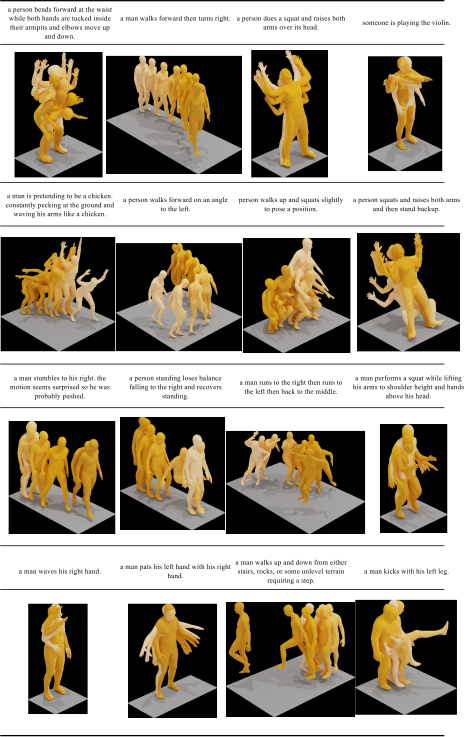

Motion Mamba: Efficient and Long Sequence Motion Generation
Human motion generation stands as a significant pursuit in generative computer vision, while achieving long-sequence and efficient motion generation remains challenging. Recent advancements in state space models (SSMs), notably Mamba, have showcased considerable promise in long sequence modeling with an efficient hardware-aware design, which appears to be a promising direction to build motion generation model upon it. Nevertheless, adapting SSMs to motion generation faces hurdles since the lack of a specialized design architecture to model motion sequence. To address these challenges, we propose Motion Mamba, a simple and efficient approach that presents the pioneering motion generation model utilized SSMs. Specifically, we design a Hierarchical Temporal Mamba (HTM) block to process temporal data by ensemble varying numbers of isolated SSM modules across a symmetric U-Net architecture aimed at preserving motion consistency between frames. We also design a Bidirectional Spatial Mamba (BSM) block to bidirectionally process latent poses, to enhance accurate motion generation within a temporal frame. Our proposed method achieves up to 50% FID improvement and up to 4 times faster on the HumanML3D and KIT-ML datasets compared to the previous best diffusion-based method, which demonstrates strong capabilities of high-quality long sequence motion modeling and real-time human motion generation.
The character performs a backflip when doing exercise.
The character first walks, then jumps, and later runs in a straight line.
The character walks in two consecutive clockwise circles.
The character executes a smash during a badminton match.
The character performs a street dance.
The character sits on the ground, then stands up, picks up a newspaper from the ground, and starts to read.

We compared the proposed Motion Mamba with well-established state-of-the-art methods such as MotionDiffuse, MDM, and MLD. We presented three distinct motion prompts and visualized them in the form of motion sequence. The results demonstrated our superior performance compared to existing methods.

We have included extra examples to showcase the proposed Motion Mamba model. These examples feature randomly selected prompts sourced from HumanML3D, providing additional visualizations of the model's capabilities.
This figure illustrates the architecture of the proposed Motion Mamba model. Each of encoder and decoder blocks consists of a Hierarchical Temporal Mamba block (HTM) and a Bidirectional Spatial Mamba (BSM) block, which possess hierarchical scan and bidirectional scan within SSM layers respectively. This symmetric distribution of scans ensure a balanced and coherence framework across the encoder-decoder architecture.

Motion Mamba has achieved significantly superior performance on long squence modeling and motion generation efficiency compared with other well-designed state-of-the-art methods such as MLD [6], MotionDiffuse [53], and MDM [49]
@inproceedings{zhang2025motion,
title={Motion Mamba: Efficient and Long Sequence Motion Generation},
author={Zhang, Zeyu and Liu, Akide and Reid, Ian and Hartley, Richard and Zhuang, Bohan and Tang, Hao},
booktitle={European Conference on Computer Vision},
pages={265--282},
year={2025},
organization={Springer}
}